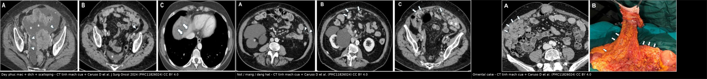
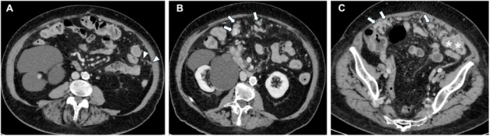
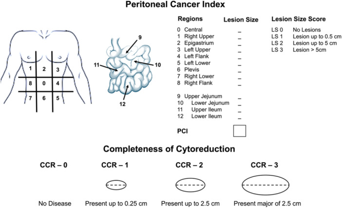
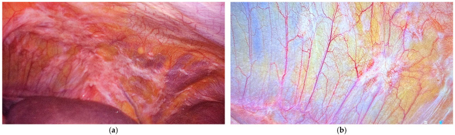

1903 — Theo dõi sau CRS/HIPEC & PIPAC ở u phúc mạc: PCI, CCR, PRGS và cạm bẫy hậu phẫu / Follow-up after CRS/HIPEC and PIPAC for peritoneal surface malignancies
Tags: pattern:day-phuc-mac pattern:not vung:phuc-mac vung:o-bung score:PCI score:CCR score:PRGS protocol:CT-bung-co-can-quang protocol:MRI-bung protocol:PIPAC
Mức chắc chắn (certainty): tổng hợp y văn (literature synthesis) — 1 tổng quan hình ảnh u phúc mạc (Caruso D et al., J Surg Oncol 2024, PMC11826024), 1 báo cáo thực tế của cơ sở dữ liệu PIPAC quốc tế ISSPP (Jørgensen MS et al., Pleura Peritoneum 2025, PMC12458025, 1.126 bệnh nhân / 3.224 lần PIPAC), 1 nghiên cứu về giá trị tiên lượng của PRGS (Baake J et al., Pleura Peritoneum 2023, PMC10249756, 97 bệnh nhân), 1 loạt ca PIPAC (Marrelli D et al., Cancers 2025, PMC12191417) và 1 tổng quan hệ thống về HIPEC – tái phát phúc mạc (Yap DRY et al., Front Oncol 2021, PMC8678115). Số nào nguồn không nêu thì ghi "chưa rõ".
1. Tổng quan bệnh học – cơ chế hình ảnh
- Vì sao u phúc mạc lan theo "bản đồ" chứ không ngẫu nhiên: tế bào u phóng thích vào ổ bụng trôi theo dòng dịch phúc mạc — dịch đi theo trọng lực xuống cùng đồ – túi cùng Douglas – rãnh đại tràng phải, rồi được hút lên dưới cơ hoành nơi có các lỗ hấp thu (stomata) trên phúc mạc hoành và mạc nối lớn. Vì vậy ổ di căn hay gặp ở hoành, mạc nối, tiểu khung, rãnh đại tràng phải, mạc treo ruột non — đúng 13 vùng mà PCI (Peritoneal Cancer Index) chia ra (Caruso D et al. 2024). Hệ quả thực hành: đọc theo 13 vùng, không "nhìn tổng thể rồi kết luận".
- TẠI SAO u phúc mạc khó thấy trên CT: phúc mạc bình thường là màng một lớp, dày dưới 1 mm, CT gần như không thấy. Nhân < 1 cm không tạo đủ tương phản với mỡ/dịch quanh nó → CT chỉ có Se 9,1–50% cho nhân < 1 cm, và với ngưỡng phát hiện 5 mm độ nhạy chỉ khoảng 11% (Caruso D et al. 2024). Đây là lý do "CT sạch" không loại trừ carcinosis vi thể.
- Ngưỡng định lượng của toàn bộ bài (PCI + CCR): PCI chia ổ bụng 13 vùng, mỗi vùng chấm 0–3 theo đường kính lớn nhất của nhân lớn nhất: 0 = không thấy u, 1 = < 0,5 cm**, **2 = 0,5–5 cm**, **3 = > 5 cm; tổng tối đa 39 (Caruso D et al. 2024). PCI ≥ 20 thì khả năng đạt cắt hết (complete cytoreduction) rất thấp; vùng hỗng tràng 9–10 xấu hơn vùng hồi tràng 11–12.
- Ngưỡng PCI theo mô học (khác nhau, không dùng chung một số): u nhầy phúc mạc giả (PMP) vẫn có thể mổ khi PCI cao — ngưỡng khả mổ 21 (độ thấp) và 25 (độ cao); ung thư dạ dày chỉ nên CRS/HIPEC khi PCI < 6; ung thư buồng trứng sau hóa tân bổ trợ: PCI < 17 dự báo cắt hết tốt nhất (Caruso D et al. 2024).
- CCR (Completeness of Cytoreduction) — thang 4 bậc theo mm: CCR-0 = không còn u đại thể; CCR-1 = còn u < 2,5 mm**; **CCR-2** = **2,5 mm – 2,5 cm**; **CCR-3** = **> 2,5 cm. HIPEC thường chỉ định khi CCR-0/1 (Caruso D et al. 2024). Điểm này giải thích vì sao báo cáo hậu phẫu phải ghi mm, không ghi "còn ít".
- TẠI SAO "u còn 2,5 mm" lại là ngưỡng: HIPEC chỉ thấm được vài mm vào mô — lớp u dày hơn ngưỡng đó không nhận đủ thuốc. Đây là vật lý của độ thấm giới hạn, không phải quy ước hành chính.
- Vì sao PIPAC ra đời: CRS/HIPEC cần mổ lớn và chỉ làm được khi bệnh còn mổ được. PIPAC (pressurized intraperitoneal aerosol chemotherapy) bơm hóa chất dạng aerosol dưới áp lực qua 2 trocar, tạo lớp sương mù thuốc phủ phúc mạc — dùng cho bệnh không mổ được hoặc bidirectional (kết hợp hệ thống). Báo cáo ISSPP lần 3: 1.126 bệnh nhân, 3.224 lần PIPAC, trung vị 2 lần/bệnh nhân (1–33); PCI trung vị 19 và không đổi qua các lần; không vào được ổ bụng (nonaccess) 3,5% ở lần 1 → 1,4% các lần sau (Jørgensen MS et al. 2025).
- TẠI SAO đánh giá đáp ứng PIPAC phải bằng mô học, không bằng CT: tổn thương phúc mạc nhỏ + xơ hóa sau điều trị → RECIST 1.1 kém giá trị. Chuẩn dùng là PRGS (peritoneal regression grading score) trên sinh thiết 4 góc ổ bụng, thang 4 bậc: PRGS 1 = đáp ứng hoàn toàn (không còn tế bào u, nhiều xơ thoái triển/mucin không tế bào/hoại tử nhồi máu); PRGS 2 = thoái triển chiếm ưu thế so với tế bào u; PRGS 3 = có thoái triển nhưng tế bào u chiếm ưu thế; PRGS 4 = không có dấu hiệu thoái triển (Baake J et al., Pleura Peritoneum 2023, PMC10249756). PRGS trung bình ≤ 2 = "đáp ứng hoàn toàn/lớn".
- Số liệu để tư vấn (PIPAC): đáp ứng PRGS trung bình ≤ 2 đạt 57% / 72% / 75% ở PIPAC 1/2/3; sống thêm trung vị 12,5 tháng kể từ PIPAC 1; biến chứng nặng Dindo–Clavien ≥ 3b 0,7%, CTCAE ≥ 3 là 5,2%; thể tích dịch báng > 500 mL giảm có ý nghĩa từ PIPAC 4 trở đi (Jørgensen MS et al. 2025, PMC12458025). PRGS có giá trị tiên lượng độc lập: PRGS ban đầu ≤ 2 → sống thêm 12,1 vs 8,0 tháng (P = 0,02) (Baake J et al. 2023, PMC10249756).
- Vì sao theo dõi sau CRS/HIPEC khó: (a) nhân nhỏ dưới ngưỡng CT; (b) thay đổi hậu phẫu (xơ, dính, mạc nối cắt bỏ, quai ruột tái bố trí) tạo "giả tổn thương"; (c) mô học quyết định số phận — HIPEC cải thiện sống không tái phát ở 5/7 thử nghiệm ung thư dạ dày, nhưng chỉ 1/3 thử nghiệm buồng trứng và 0/3 thử nghiệm đại tràng (Yap DRY et al. 2021) → không hứa hẹn "HIPEC chặn tái phát" với mọi mô học.
2. Mẫu hình + chẩn đoán phân biệt theo vị trí (gamut)
Trục A — theo hình thái (nhìn cái gì trước):
- Dày + ngấm thuốc phúc mạc (mảng mỏng hoặc nốt): dấu sớm nhất; ở mặt dưới hoành gây lõm nhu mô gan/lách = scalloping, dễ đọc nhầm di căn gan/lách (Caruso D et al. 2024).
- Nhân đặc: vi nhân 1–5 mm, nhân tới 5 cm, khối > 5 cm do nhiều nhân hợp lại. Kích thước này chính là cái PCI chấm điểm.
- Nhân dạng nang: đặc trưng PMP (u nhầy ruột thừa) hoặc u trung biểu mô đa nang lành tính; nang đậm độ gần dịch, có thể vôi hóa vỏ.
- Omental cake: mạc nối dày thành bản mô mềm, đẩy quai ruột ra sau; khởi đầu là tăng đậm độ mỡ mạc nối rồi dạng lưới/nốt.
- Mạc treo ruột non "đông cứng" (frozen mesentery): mỡ mạc treo thâm nhiễm, mất nếp gấp bình thường, mạch mạc treo sung huyết; nặng gây tắc ruột — dấu hiệu tiên lượng xấu.
- Dịch báng (tự do hoặc khu trú trong PMP/u trung biểu mô).
- Vôi hóa: hay gặp ở ung thư buồng trứng thanh dịch/ung thư dạ dày; vôi hóa sau hóa trị = dấu đáp ứng, đừng đọc là tiến triển; mảng vôi hóa phúc mạc không có khối gợi ý u trung biểu mô nhú biệt hóa cao (WDPM) (Caruso D et al. 2024).
Trục B — theo "cảnh" lâm sàng sau mổ (quyết định cách đọc):
- 3–6 tháng đầu sau CRS/HIPEC: ưu tiên phát hiện biến chứng (áp-xe, rò, tắc ruột, dịch khu trú) hơn là tái phát — tổn thương "mới" trong giai đoạn này thường là viêm/xơ.
- Sau 6 tháng: ưu tiên tái phát — nhân mới, dày phúc mạc mới, dịch báng mới xuất hiện, omental cake tái hình thành.
- Đang PIPAC: mục tiêu là theo dõi dung nạp + đáp ứng mô học; hình ảnh dùng để loại trừ tiến triển ngoài phúc mạc/tắc ruột, không để "chấm điểm đáp ứng".
- Sau PIPAC chuyển mổ (bidirectional): CT để đánh giá khả mổ lại, không phải để chấm PRGS.
3. Bảng so sánh phân biệt (ma trận đối chiếu)
| Thực thể (entity) | Hình ảnh điển hình | Chốt vào (rule-in) | Chốt loại (rule-out) | Gợi ý xác nhận |
|---|---|---|---|---|
| Tái phát carcinosis | Nhân mới hoặc dày phúc mạc mới ở vùng trước đó sạch; omental cake tái hình thành; dịch báng mới | Tổn thương MỚI so với phim sau mổ nền + tăng kích thước theo thời gian | Tổn thương ổn định ≥ 6–12 tháng, không đổi hình thái → nghĩ xơ | So phim nền sau mổ (bắt buộc); CT 3–6 tháng; MRI-DWI |
| Thay đổi hậu phẫu (xơ/dính) | Dày mờ, dạng dải, bờ không lồi, kéo co mạc treo; không có nhân rời | Bờ không lồi + không tăng theo thời gian + trùng vùng mổ | Có nốt lồi, bờ cong hoặc tăng dần → tái phát | Đối chiếu phim nền; MRI T2/DWI (xơ tối, không hạn chế khuếch tán) |
| Xơ hóa sau PIPAC | Mảng dày giảm dần, có thể vôi hóa; bụng "sạch dần" | Giảm kích thước/số nhân qua các lần | Tổn thương to lên hoặc nhân mới → tiến triển | PRGS trên sinh thiết (chuẩn vàng), không phải CT |
| PMP/u nhầy | Nhân dạng nang, dịch khu trú, scalloping gan/lách, vôi hóa vỏ | Dịch nhầy khu trú + lõm nhu mô gan/lách nhẵn | Nhân đặc bờ tua → carcinosis không nhầy/ung thư thứ phát | MRI T2 (nhầy rất sáng), mô bệnh; PET có vai trò phân độ |
| U trung biểu mô phúc mạc | Dày phúc mạc dạng mảng, vôi hóa mảng không khối, dịch khu trú | Mảng vôi hóa phúc mạc + dịch khu trú + không ổ nguyên phát | Có ổ nguyên phát rõ (buồng trứng/đại tràng) → carcinosis | Mô bệnh + BAP1/p16 (bài 143) |
| Lao phúc mạc | Dày phúc mạc đều, nốt nhỏ rải đều, dịch báng, hạch hoại tử trung tâm, dày mạc nối | Hạch hoại tử + tổn thương phổi lao + dịch tiết dịch | Không hạch hoại tử, có ổ nguyên phát → carcinosis | PCR lao dịch báng; nội soi ổ bụng |
| Lymphomatosis phúc mạc | "Stellate mesentery" — mạch mạc treo nổi rõ, mỡ mạc treo thâm nhiễm, hạch lớn | Mạch mạc treo "hình sao" + hạch lớn đối xứng | Có nhân đặc phúc mạc rời rạc → carcinosis | Mô bệnh; LDH; PET-CT |

Ba mẫu hình đọc trên CT tĩnh mạch cửa: trái — dày phúc mạc + dịch báng + scalloping mặt dưới gan (mũi tên); giữa — nhân vi nhân (đầu mũi tên), nhân (mũi tên) và mảng (sao); phải — omental cake (đầu mũi tên) đối chiếu mạc nối cắt bỏ trong mổ. Nguồn: Caruso D et al., J Surg Oncol 2024;130(6):1203–1212, PMC11826024 Fig. 1, 2, 4, CC BY 4.0 — ảnh ghép letterbox, không crop/kéo giãn.Đọc theo 13 vùng — thứ tự không được đổi
- Vùng 0 (trung tâm): mạc nối lớn + mạc treo đại tràng ngang.
- Vùng 1–6 (phải trên → tiểu khung): gan, hoành phải, rãnh đại tràng phải, túi cùng Douglas.
- Vùng 7–12: lách, hoành trái, rãnh trái, hỗng tràng 9–10, hồi tràng 11–12 (vùng 9–12 là vùng khó mổ nhất).
- Ghi cả 13 vùng kể cả vùng 0 điểm — báo cáo "PCI = x/39" mà không liệt kê vùng là không dùng được để mổ.
4. Protocol chụp + hệ phân độ & quyết định theo dõi
Chọn modality:
| Bối cảnh | Chọn | Ngưỡng/ghi chú |
|---|---|---|
| Theo dõi chuẩn sau CRS/HIPEC | CT bụng–chậu có cản quang, thì tĩnh mạch cửa, lát ≤ 1 mm, tái tạo coronal/sagittal | Không dùng thì động mạch — phúc mạc ngấm thuốc muộn |
| Nghi tổn thương nhỏ ở mạc treo/ruột non/hilum gan (đặc biệt PMP) | MRI bụng + DWI | Trong PMP: MRI Se 88% vs CT 67% cho mạc treo/mặt thanh mạc ruột non, độ đặc hiệu cả hai 100% (Caruso D et al. 2024) |
| PMP — phân độ, tiên lượng | CT + ¹⁸F-FDG PET/CT | SUVmax 2,02 dự báo sống không tiến triển; 2,63 dự báo độ ác (Se 77,8%/Sp 72,3%) (Caruso D et al. 2024) |
| U nhầy/mô học chế nhầy, tế bào hình nhẫn | Không dựa PET | PET âm giả ở u nhầy, ung thư tế bào hình nhẫn, nhân nhỏ (Caruso D et al. 2024) |
| Đánh giá đáp ứng PIPAC | Sinh thiết 4 góc + PRGS | Không dùng RECIST/CT để chấm đáp ứng |
Ba thang điểm phải phân biệt rõ trong báo cáo:
| Thang | Đo cái gì | Thang điểm | Ngưỡng hành động |
|---|---|---|---|
| PCI | Gánh nặng u trên 13 vùng | 0–39 | ≥ 20: cắt hết rất khó; < 6 (dạ dày), < 17 (buồng trứng sau hóa), 21/25 (PMP thấp/cao độ) |
| CCR | U còn lại sau mổ | 0 / 1 / 2 / 3 | CCR-0/1 (< 2,5 mm) → HIPEC; CCR-2/3 → không |
| PRGS | Đáp ứng mô học sau PIPAC | 1–4 theo vùng, lấy trung bình | Trung bình ≤ 2 = đáp ứng lớn/hoàn toàn → sống thêm dài hơn |
flowchart TD
A[Sau CRS/HIPEC: CT 3-6 thang dau] --> B{Muc dich: bien chung hay tai phat?}
B -->|0-6 thang| C[Tim ap-xe, ro, tac ruot, dich khu tru]
B -->|Sau 6 thang| D[So PHIM NEN sau mo + doc 13 vung]
D --> E{Co ton thuong MOI hoac to len?}
E -->|Khong| F[Theo doi tiep: CT 6 thang x 2 nam]
E -->|Co| G{Nam o vung kho mo: 9-12, hilum, mac treo?}
G -->|Co| H[MRI + DWI de phan biet xo vs u]
G -->|Khong| I[Danh gia kha mo: PCI + di can ngoai phuc mac]
H --> I
I --> J{PCI phu hop mo hoc?}
J -->|Co| K[CRS/HIPEC lai hoac PIPAC]
J -->|Khong| L[PIPAC / hoa tri he thong]
K --> M[Sinh thiet 4 goc: PRGS]
L --> M
M --> N{PRGS trung binh ≤ 2?}
N -->|Co| O[Tiep tuc, gian khoang cach neu on dinh]
N -->|Khong| P[Doi phac do / xem xet mo lai]
- Lịch theo dõi: các nguồn đã đọc không đưa một lịch thống nhất cho toàn bộ mô học — ghi "chưa rõ" thay vì bịa. Nguyên tắc an toàn: chụp nền sau mổ 3 tháng (để có mốc so sánh — quan trọng hơn cả tần suất), sau đó 3–6 tháng/lần trong 2 năm đầu, thưa dần; chụp sớm khi có triệu chứng. PIPAC lặp mỗi 6 tuần, giãn thành 3 tháng khi đáp ứng mô học lớn/hoàn toàn (Baake J et al. 2023, PMC10249756).
- Cái phải ghi trong báo cáo theo dõi: (1) PCI và danh sách 13 vùng; (2) vị trí + kích thước (mm) từng tổn thương mới; (3) so sánh với phim nền (có/không có); (4) biến chứng hậu phẫu; (5) gợi ý mô học nếu có (nhầy → PMP; vôi mảng → WDPM). Báo cáo thiếu mục (1) và (3) là báo cáo không trả lời được câu hỏi của phẫu thuật viên.
5. Biến thể bình thường và cạm bẫy
- Biến thể bình thường: mạc nối mỡ "lốm đốm" ở người gầy; dịch phúc mạc sinh lý lượng rất ít ở phụ nữ trong chu kỳ; mạc treo dày nhẹ sau mổ do phù. Không có nhân lồi bờ cong và không tăng theo thời gian → không gọi tái phát.
- Cạm bẫy 1 — không có phim nền: "có tổn thương" mà không so được với phim sau mổ là không thể phân biệt xơ với tái phát. Đây là lỗi hay gặp nhất và cách tránh rẻ nhất: đặt lịch chụp nền 3 tháng sau mổ.
- Cạm bẫy 2 — scalloping gan/lách bị đọc là di căn gan: lõm nhẵn, bờ cong đều ở mặt dưới gan/lách do dịch nhầy/dày phúc mạc hoành đè vào; di căn gan thật nằm trong nhu mô, có viền. So sánh với mặt trên và dùng tái tạo sagittal để thấy rõ (Caruso D et al. 2024).
- Cạm bẫy 3 — chấm PCI trên CT rồi tin tuyệt đối: CT-PCI Se 76%/Sp 69% so với mổ; đặt ngưỡng CT-PCI 20 để loại mổ là không chính xác — gần một nửa bệnh nhân bị xếp "không mổ được" trên CT vẫn cắt hết được (Caruso D et al. 2024). CT-PCI là công cụ trao đổi, không phải phán quyết.
- Cạm bẫy 4 — vôi hóa sau hóa trị đọc là tiến triển: vôi hóa trong nhân sau điều trị = đáp ứng; chỉ gọi tiến triển khi kích thước/số nhân tăng hoặc có tổn thương mới.
- Cạm bẫy 5 — PET âm giả: u nhầy, tế bào hình nhẫn, nhân < 1 cm thường không bắt FDG; PET âm không loại trừ carcinosis (Caruso D et al. 2024).
- Cạm bẫy 6 — đánh giá đáp ứng PIPAC bằng CT: xơ hóa sau PIPAC làm tổn thương nhỏ đi nhưng vẫn còn tế bào sống, và ngược lại mảng dày có thể chỉ là xơ. Đáp ứng chỉ xác định bằng PRGS; sinh thiết 4 góc vì PRGS cao nhất có thể nằm ở góc không phải "chỗ xấu nhất nhìn thấy" (nghiên cứu về chọn vị trí sinh thiết PRGS, PMC9467898).
- Cạm bẫy 7 — bỏ qua biến chứng vì "đang đi tìm tái phát": trong 6 tháng đầu, áp-xe/rò/tắc ruột nguy hiểm hơn tái phát. Satisfaction of search ở đây là tìm u mà bỏ ổ áp-xe.
6. Tự lượng giá — Blind Quiz
Ca 1 — Bệnh nhân ung thư dạ dày, 6 tháng sau CRS/HIPEC, đau bụng tăng, chưa có phim nền. Hãy mô tả hình thái tổn thương trước khi mở đáp án.

- Gợi ý lâm sàng: PCI trước mổ 12; hiện không sốt.
- Câu hỏi: Có mấy loại hình thái tổn thương? Chấm PCI cho các vùng nhìn thấy? Cần thêm gì để kết luận tái phát?
Bấm để hiện đáp án (findings + chẩn đoán)
- Dấu hiệu: (A) vi nhân 1–5 mm (đầu mũi tên trắng) rải trên phúc mạc; (B,C) nhân (mũi tên trắng) và mảng (sao trắng) — ba hình thái cùng tồn tại.
- Chấm điểm: vi nhân = 1 điểm/vùng, nhân 0,5–5 cm = 2 điểm, mảng > 5 cm hoặc khối = 3 điểm; chỉ chấm nhân lớn nhất mỗi vùng.
- Kết luận: không thể gọi tái phát nếu không có phim nền — phải so với CT 3 tháng sau mổ. Nếu tổn thương mới/tăng → tái phát; nếu ổn định → xơ/dính.
- Nguồn ảnh: Caruso D et al., J Surg Oncol 2024, PMC11826024 Fig. 2, CC BY 4.0.
Ca 2 — Bảng điểm dùng để họp với phẫu thuật viên. Nhìn sơ đồ, trả lời 3 câu: PCI tối đa bao nhiêu? CCR-1 khác CCR-2 ở ngưỡng nào? HIPEC chỉ định tới CCR mấy?

- Câu hỏi: 13 vùng gồm những gì? Vì sao ngưỡng lại là 2,5 mm và 2,5 cm?
Bấm để hiện đáp án
- PCI tối đa 39 (13 vùng × 3 điểm). Mỗi vùng chấm theo đường kính nhân lớn nhất: < 0,5 cm = 1; 0,5–5 cm = 2; > 5 cm = 3.
- CCR-1: còn u < 2,5 mm** (0,25 cm); **CCR-2: 2,5 mm – 2,5 cm**; **CCR-3: > 2,5 cm; CCR-0: không còn u.
- HIPEC chỉ định khi CCR-0/1 — vì thuốc chỉ thấm vài mm vào mô, lớp u dày hơn ngưỡng đó không nhận đủ liều.
- Nguồn ảnh: Caruso D et al., J Surg Oncol 2024, PMC11826024 Fig. 9, CC BY 4.0.
Ca 3 — Bệnh nhân PIPAC lần 2. Ảnh nội soi trước và sau 1 đợt PIPAC (PCI 12). CT không thay đổi đáng kể. Đáp ứng được xác định thế nào?

- Câu hỏi: Vì sao CT "không đổi" mà vẫn có thể là đáp ứng? Dùng thang nào, lấy mẫu ở đâu?
Bấm để hiện đáp án
- Dấu hiệu: (a) trước PIPAC — tổn thương phúc mạc vùng trên trái rõ; (b) sau PIPAC — vùng đó phẳng, mất tổn thương đại thể; sinh thiết âm tính tế bào u.
- Vì sao CT không đổi: xơ hóa/dày phúc mạc tồn tại sau khi hết tế bào sống → CT không phân biệt được xơ với u còn sống; đáp ứng là mô học.
- Thang: PRGS (1–4), lấy trung bình các vị trí; trung bình ≤ 2 = đáp ứng lớn/hoàn toàn. Lấy sinh thiết 4 góc, kể cả vùng trông "sạch" — PRGS cao nhất có thể nằm ngoài chỗ xấu nhất nhìn thấy.
- Số liệu: PRGS trung bình ≤ 2 đạt 57% ở PIPAC 1, 72% ở PIPAC 2, 75% ở PIPAC 3 (ISSPP, 3.224 lần PIPAC).
- Nguồn ảnh: Marrelli D et al., Cancers 2025;17(12):1938, PMC12191417 Fig. 2, CC BY 4.0.
Bài liên quan chéo
- 143 – U trung biểu mô phúc mạc ác vs carcinomatosis (chẩn đoán phân biệt nền tảng + BAP1)
- 141 – Phúc mạc (giải phẫu cắt lớp) (13 vùng, rãnh, túi cùng)
- 180 – Biến chứng sau TACE/TARE (biến chứng can thiệp ổ bụng)
- 188 – Bệnh tủy do gan & tăng áp cửa (dịch báng — phân biệt nguyên nhân)
- 020 – Nốt phổi (nốt phổi đơn độc khi tầm soát di căn)
Ảnh
- Tên file theo quy ước
1903_<slug>_<Modality>_<SourceID>.jpg; nguồn + giấy phép từng ảnh ởimages/CREDITS.md. - Cả 5 ảnh đều CC BY 4.0 → được phép tạo phái sinh; ảnh ghép
composite_tai-phat-phuc-mac.jpggiữ CC BY 4.0 với attribution trong dải đen.
Không dùng để chẩn đoán độc lập khi chưa có người hướng dẫn.